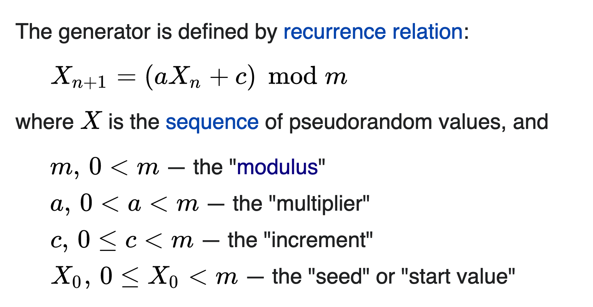
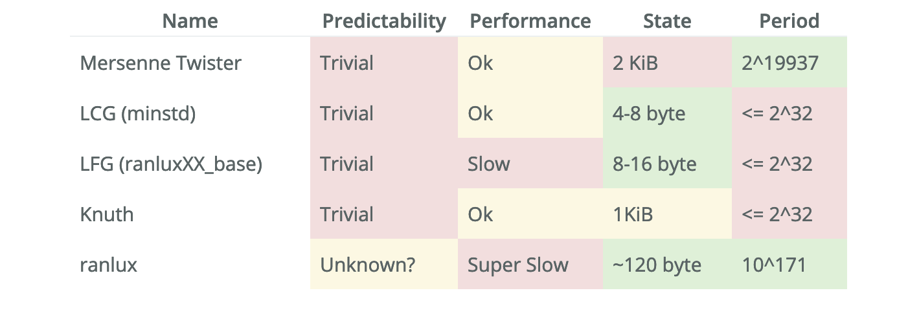
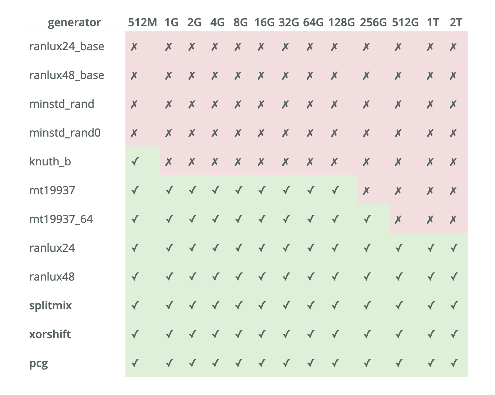
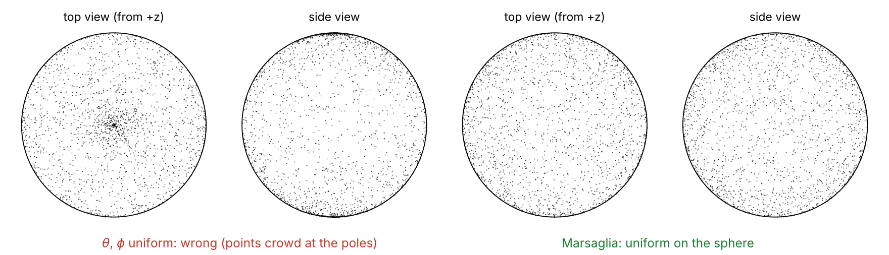

Lab #4
Templates, random numbers and a class for matrices
Today
- Introduction to C++ (part IV) — generic programming: class templates (example N8) and a glimpse of template metaprogramming (example N9).
- Lab #3: the solution —
operator(), the friend functions and<<. - Random numbers — what a pseudo-random number generator is, how the generators of the C++ standard library compare, and why we use the Mersenne Twister through the class
randnumgen, which you get complete. - Task: random vectors —
random(L), a random vector in a box, andrandom_orient(), a random unit vector uniformly distributed on the sphere (Marsaglia’s algorithm). - Task: a class for matrices — the first methods of
pmatrixq, a class template that followspvectorclosely.
Part 1
Introduction to C++ (part IV)
Where we left off
pvectorstoresNTnumbers of typentype, both fixed once for the whole program at the top ofpvector.hpp:A program that needs vectors of
doubleand offloat, or in 3 and in 2 dimensions, would need two copies of the class with different names.Generic programming solves this: write the class once, with the type (and the size) as parameters, and let the compiler generate the versions you use:
genvec<double>,genvec<float>, … (example N8).The same mechanism lets the compiler compute things before the program runs: template metaprogramming (example N9).
Example N8: genvec.hpp
examples/N8_generic_programming/genvec.hpp
#include<cstdlib>
#include<iostream>
// a generic class (a metaclass or class template)
// ntype can be float, double, long double, ...
constexpr int NT=3;// <---- like #define
template <typename ntype>
class genvec
{
// private members
ntype v[NT];
public:
void set(int i, ntype val)
{
v[i] = val;
}
ntype get(int i) const
{
return v[i];
}template <typename ntype>(line 7):genvecis a class template, a recipe for classes. Inside itntypeis a type still to be chosen; the rest is an ordinary class.constexpr int NT=3;(line 5) is a typed constant known when compiling: it can size the arrayv, like the macro of Lab #1, but it is a real variable with a type and a scope.
Example N8: genvec.cpp
examples/N8_generic_programming/genvec.cpp
genvec<double> gv;: the compiler instantiates the template withntype=double, i.e. it writes the classgenvec<double>for us, and then compiles it.genvec<float>orgenvec<int>would be other classes, generated in the same way.- The template argument is part of the type:
genvec gv;alone does not compile, because nothing tells the compiler whichntypeto use:error: class template argument deduction failed(g++; withclang++:no viable constructor or deduction guide for deduction of template arguments of 'genvec').
Class templates
A template is not code yet: it becomes code only when it is used with a given type. So the compiler must see the whole template where it is used: templates are written entirely in the header (
.hpp), as we already do for all our classes.A template can have several parameters, also integer ones (non-type parameters), known when compiling:
You have already used templates of the standard library:
std::initializer_list<ntype>(Lab #2) is one.Each different instantiation is a different class:
genvec<double>andgenvec<float>are as different asintanddouble. The cost is paid at compile time; at run time a template class is exactly as fast as the class written by hand.
Example N9: myfibonacci.cpp (1)
examples/N9_metaprogramming/myfibonacci.cpp: the Fibonacci numbers \(F_N = F_{N-1} + F_{N-2}\), computed by the compiler.
#include<iostream>
#include<tuple>
using namespace std;
// FIBONACCI SERIES: F_{n} = F_{n-1} + F_{n-2}
template<int N>
class fib {
public:
static constexpr long int value = fib<N-1>::value + fib<N-2>::value;
// tuple_cat constructs a tuple that is a concatenation of all tuples provided as args.
// E.g. int a=1;
// string s="pippo";
// float f=1.3;
// auto t=tuple_cat(make_tuple(a), make_tuple(s));
// auto t2=tuple_cat(t, f);
// results in the tuple whose elements are:
// {1, "pippo", 1.3}
// Note that make_tuple is necessary since this way we convert value to a tuple which can be added to the present tuple
// by tuple_cat.
static constexpr auto fis = tuple_cat(fib<N-1>::fis, make_tuple(value)); // add value to the tuple
};
// stop recursion
template<>
class fib<1> {
public:
static constexpr long int value = 1;
static constexpr tuple<long int> fis = make_tuple(1);
};
template<>
class fib<0> {
public:
static constexpr long int value = 0;
};Example N9: myfibonacci.cpp (2)
examples/N9_metaprogramming/myfibonacci.cpp
// type to hold an integer
template<int N> struct int_{static constexpr int n=N;};
template <class T, class I>
void print_tuple(T l, I nel)
{
cout << get<tuple_size<T>::value-nel.n>(l) << ","; // print n-th element
int_<nel.n-1> nn;
print_tuple(l, nn); // recursively print remaining elements
}
// stop recursion
template <class T>
void print_tuple(T l, int_<1>) // we simply provide a type as second argument since istance of second argument is not used
{
cout << get<tuple_size<T>::value-1>(l) << "\n";
}
// the following varadic function calls print_tuple where second argument is the number of elements of the tuple
template<class T>
void print_tuple(T l)
{
print_tuple(l, int_<tuple_size<T>::value>()); // int_<tuple_size<T>::value>() is an object of type struct int_
}
int main()
{
static constexpr int N = 90;
fib<N> f;
cout << "The Fibonacci sequence up to N=" << N << " is:\n";
print_tuple(f.fis);
}Example N9: how it works
template<int N> class fib: one class for each integerN.valueisstatic constexpr: a constant of the class (not of the objects), computed when compiling.fib<N>::valueneedsfib<N-1>::valueandfib<N-2>::value, so the compiler instantiatesfib<N-1>,fib<N-2>, …, recursively.template<> class fib<1>andfib<0>are full specializations: forN= 1 and 0 they replace the general template, and stop the recursion, like the base case of a recursive function.fisis astd::tuple, a fixed-size collection of values:tuple_catappendsvalueto the tuple offib<N-1>, sofib<N>::fisholds \(F_1, \dots, F_N\).- Printing:
get<i>(t)needs an indexiknown when compiling, so a normalforloop cannot be used.print_tuplecalls itself with the typeint_<n-1>, which carries the index; the overload forint_<1>stops the recursion (function overloading, Lab #2). - At run time the program only prints: all the numbers are already in the executable.
Compile-time errors are a feature
The Fibonacci sequence up to N=90 is:
1,1,2,3,5,8,13,21,34,55,89,144,233,377,610,987,...,2880067194370816120Now set N = 100 in main and compile again:
myfibonacci.cpp:8:27: error: overflow in constant expression [-fpermissive]- \(F_{93} \simeq 1.2\times 10^{19}\) does not fit in a
long int(at most \(2^{63}-1 \simeq 9.2\times 10^{18}\)): the largestNthat works is 92. In a normal program the overflow would silently give a wrong (negative) number at run time; when the compiler does the computation, the overflow is an error (clang++:constexpr variable 'value' must be initialized by a constant expression). - We will not write metaprograms. What we use from this example:
constexpr, integer template parameters (template<int N>, theNTofpmatrixq), and the idea that whatever the compiler knows (sizes, constants) costs nothing at run time. - The folder also contains
fibonacci.cpp, an alternative implementation: the sum is done by a classSum, and<<is overloaded to print anystd::tuple.
Part 2
Lab #3: the solution
operator()
project/pvector.hpp
// This is needed to access elements of const vector objects
// this is like having following arguments: operator()(const pvector *this, int i)
// where (implicit, i.e. (*this) ) first argument is the "calling" object
// V(i) = 1.0;
// cout << V(0);
// V ( i )
// operand operand
ntype operator()(int idx) const
{
return v[idx];
}
// this is like having following arguments: operator()(pvector *this, int i)
// where first (implicit, i.e. (*this) ) argument is the "calling" object
// pvector A;
// double val;
// std::cout << A(1);
// A(1)=val;
ntype& operator()(int idx)
{
return v[idx];
}- Each version is one line,
return v[idx];: the non-constone returns a reference to the component (A(1) = 5.0;writes inA), theconstone a copy of its value, and it is the one used forconstvectors andconst pvector&arguments.
Scalar times vector and rint()
project/pvector.hpp
- Both are friend functions, not methods: no
*this, all the operands are arguments, and they can readV2.v[i]because they are friends ofpvector. - In
rint,rint(V2.v[i])has a number as argument: it is therint()of<cmath>.
mulcw() and divcw()
project/pvector.hpp
// mulcw: component wise multiplication, i.e. C=mulcw(A,B), i.e. C(i) = A(i)*B(i)
friend pvector mulcw(const pvector& V1, const pvector& V2)
{
pvector VT;
for (int i=0; i < NT; i++)
{
VT(i) = V1(i)*V2(i);
}
return VT;
}
// divcw: component wise division, i.e. C=divcw(A,B), i.e. C(i) = A(i)/B(i)
friend pvector divcw(const pvector& V1, const pvector& V2)
{
pvector VT;
for (int i=0; i < NT; i++)
{
VT(i) = V1(i)/V2(i);
}
return VT;
}VT(i) = ...uses the non-constoperator()(it writes intoVT);V1(i)andV2(i)theconstone, becauseV1andV2areconst pvector&.divcwdoes not check for zero components ofV2: division by zero givesinfornan.
operator<<
project/pvector.hpp
- It writes into
os, the stream on the left of<<, and returns it by reference, so thatstd::cout << A << " " << B << "\n"works: each<<returnsstd::coutto the next one (left associativity, Lab #3).
Part 3
Random numbers
Random numbers in a simulation
- Monte Carlo needs many random numbers: to choose a particle and its displacement, to accept or reject the move (compare \(e^{-\beta\Delta U}\) with a number in \([0,1)\)), for initial configurations and velocities: \(10^9\)–\(10^{10}\) in a long run.
- A computer produces pseudo-random numbers: a deterministic sequence \(X_{n+1} = f(X_n)\), which starts from a seed \(X_0\). Same seed, same sequence: a run can be repeated exactly (useful for debugging); different seeds give independent runs.
- What we want from a generator:
- uniformity and no correlations between successive numbers, which must pass statistical tests;
- a period (length of the sequence before it repeats) much longer than what a simulation uses;
- speed and a small state (the memory that stores \(X_n\)).
- Correlated numbers make the simulation sample the wrong distribution, silently.
The simplest generator: linear congruential

- Fast and with a tiny state, but the period is at most \(m\) (with \(m \leq 2^{32}\): about \(4\times10^9\) numbers, less than a long simulation uses); with \(m = 2^k\) the low bits are poorly random.
- Consecutive numbers are correlated. Use three of them, \((X_n, X_{n+1}, X_{n+2})/m\), as the position of a point in a cube: the points do not fill the cube, they all lie on a few parallel planes (only 15 for RANDU, an LCG widely used in the 1960s).
- The C function
rand()is often an LCG; in<random>it isstd::minstd_rand.
Figure: Wikipedia, “Linear congruential generator”. Planes: G. Marsaglia, PNAS 61, 25 (1968), the same Marsaglia of Part 4.
The generators of the C++ standard library

- Predictability: from a few outputs one can compute the next ones. It matters in cryptography, not in simulations.
- State: memory per generator. Period: the Mersenne Twister repeats after \(2^{19937}-1\) numbers, a number with about 6000 digits;
ranluxhas an excellent period but is very slow.
Table: arvid.io (2018), “On C++ Random Number Generator Quality”.
Statistical tests: PractRand

- PractRand is a battery of statistical tests applied to more and more output of a generator: 512 MB, 1 GB, …, 2 TB. ✗: the output is detected as not random.
- LCG (
minstd_rand) and the lagged-Fibonacciranlux*_basefail at once. mt19937fails at 256 GB,mt19937_64at 512 GB.ranlux24/ranlux48pass, but are very slow. Those in bold (splitmix,xorshift,pcg) pass and are fast, but are not in the standard library.
Table: arvid.io (2018), “A Better C++ Pseudo Random Number Generator”.
Why the Mersenne Twister
- It is in the standard library (
std::mt19937,std::mt19937_64in<random>): no external code to install. - Statistically good enough for us: a long MC run uses \(\sim 4\times10^{9}\) numbers of 64 bits, i.e. \(\sim 32\) GB of output, well below the 512 GB where
mt19937_64starts to fail the most demanding tests. - A huge period (\(2^{19937}-1\)), and an acceptable speed: in a simulation most of the time goes into the energies, not into the random numbers.
- A good compromise between quality, speed and availability. Its weaknesses (predictability, a state of a few KB, the failure after hundreds of GB) do not matter for our simulations.
The class randnumgen (1)
project/randnumgen.hpp (complete: you do not have to change it)
#ifndef _RANDNUMGEN_
#define _RANDNUMGEN_
#include<chrono>
#include<random>
// use by default mersenne-twister rng engine
template <class ntype, class engine>
class randnumgen {
std::random_device rd;
using myclock = std::chrono::high_resolution_clock;
engine rng;
using ud = std::uniform_real_distribution<ntype>;
// we use a pointer here since if a range different from [0,1) is needed
// we can use the constructor of uniform_real_distribution class
// to provide a different range (see randnumgen())
// If a different range is not needed, the default constructor can be used
// and one can avoid to use a pointer to uniform_real_distribution class
ud* unidst;
public:
// fixed seed
void seed(int s)
{
std::seed_seq seq{s+1, s+2, s+2};
rng.seed(seq);
}
// random seed
void rseed(void)
{
// int operator()() {}
// ticks since 1/1/1970
unsigned int t=myclock::now().time_since_epoch().count();
// ^ is bitwise XOR
std::seed_seq seq{rd()^t,rd()^t, rd()^t};
rng.seed(seq);
}The class randnumgen (2)
project/randnumgen.hpp
ntype ranf()
{
// ntype operator()(engine mt) {}
// uniform_real_distribution overloads the parenthesis operator
return (*unidst)(rng);
}
randnumgen()
{
unidst = new ud(0.0,1.0);
// equivalent way to set the range of random numbers:
// unidst->param(std::uniform_real_distribution<double>::param_type(0.0, 1.0));
}
~randnumgen()
{
delete unidst;
}
};
// ==============================================================================
// PUBLIC METHODS:
// rng.seed(<integer>) : fixed seeding
// rng.rseed(); : random seeding
// rng.ranf(); : generate a random number in [0.0,1.0)
randnumgen<double,std::mt19937_64> rng;
#endifHow to use randnumgen
randnumgenis a class template (Part 1) with two type parameters: the number type (double) and the engine (std::mt19937_64, the 64-bit Mersenne Twister). The engine produces random integers;std::uniform_real_distributionturns them into numbers in \([0,1)\).- Line 59 defines one global object
rng: every file that includesrandnumgen.hpp(pvector.hppnow does, line 39) uses the same generator, hence one sequence for the whole program. This works because our programs have a single.cppfile. unidst: created withnewin the constructor, freed withdeletein the destructor (N6).- Without
seed()orrseed()the engine starts from its default seed: every run gives the same numbers. Seed once, at the beginning ofmain, never inside a loop. - The standard does not fix the algorithm of the distributions: with the same seed, another compiler may give other numbers. Only the statistics must agree.
Part 4
New tasks for pvector: random vectors
The task
Download again project_classes.zip (unzip it elsewhere, not over your files): project/pvector.hpp has the methods of Lab #3 (Part 2) and the skeleton of random() and random_orient(); project/randnumgen.hpp is new.
The goal: project/pvector.cpp (in the zip) must print the output at the end of this part.
random(L): a random vector in a box
- Each component uniform in \([-L/2, L/2)\):
rng.ranf()is uniform in \([0,1)\), so(rng.ranf()-0.5)*Lis uniform in \([-L/2, L/2)\). - Why centred in the origin: it is the box of the minimum image convention (Lab #3),
dr - L*rint(dr/L)has components in \([-L/2, L/2]\). The same recipe gives the random displacement of a Monte Carlo move, \(\delta\,(\xi-0.5)\) for each component. - A check: for \(x\) uniform in \([-L/2, L/2)\), \(\langle x\rangle = 0\) and \(\langle x^2\rangle = L^2/12\).
Spherical coordinates fail
- Goal: \(\hat{\mathbf{u}}\) uniform on the sphere: the probability of a region \(\propto\) its area (solid angle).
- The naive way: \(\theta\) uniform in \([0,\pi]\), \(\phi\) uniform in \([0,2\pi)\), and \(\hat{\mathbf{u}} = (\sin\theta\cos\phi, \sin\theta\sin\phi, \cos\theta)\). Wrong.
- Think of the grid of meridians and parallels: uniform \(\theta\) and \(\phi\) put the same number of points in each cell \(\Delta\theta\,\Delta\phi\), but the cells shrink near the poles, where the meridians converge: a higher probability at the poles.
- In formulas, the area of a cell, which vanishes at the poles, is \[d\Omega = \sin\theta\, d\theta\, d\phi\]
- In numbers: the cap \(z > 1/2\) (\(\theta < \pi/3\)) is 1/4 of the sphere, but the naive method puts there 1/3 of the points.
- The right distribution: \(d\Omega = d(\cos\theta)\, d\phi\) (up to the sign), so \(z = \cos\theta\) must be uniform in \([-1,1]\) (not \(\theta\)), and \(\phi\) uniform in \([0,2\pi)\).
Wrong and right

- 4000 points each. Left: \(\theta\) and \(\phi\) uniform: the points crowd at the poles (the centre of the top view, the top and bottom of the side view). Right: Marsaglia’s algorithm: the same density everywhere.
- See also “Sphere Point Picking” on Wolfram MathWorld.
Marsaglia’s algorithm
- Take \(V_1, V_2\) uniform in \((-1, 1)\) and compute \(S = V_1^2 + V_2^2\).
- If \(S \geq 1\) reject the pair and go back to 1: the accepted \((V_1,V_2)\) are uniform inside the unit circle (probability of acceptance \(\pi/4 \simeq 0.785\)).
- The unit vector is \[\hat{\mathbf{u}} = \left(2V_1\sqrt{1-S},\; 2V_2\sqrt{1-S},\; 1-2S\right)\]
Why it works: \(S\) is uniform in \((0,1)\) and independent of the direction \((V_1, V_2)/\sqrt{S}\), so \(z = 1-2S\) is uniform in \((-1,1)\) and \((x, y) = \sqrt{1-z^2}\,(V_1,V_2)/\sqrt{S} = 2\sqrt{1-S}\,(V_1,V_2)\) has a uniform random direction.
- Only two random numbers per try and one square root: no
sin,cos,acos. - Detailed proof: “Detailed proof of Marsaglia’s algorithm”, PDF on the course page (Lectures → Lab notes). Original paper: G. Marsaglia, Ann. Math. Statist. 43, 645 (1972).
random_orient(): implementation
- A
do { ... } while (S >= 1.0);loop for steps 1–2, withrng.ranf():2.0*rng.ranf()-1.0is uniform in \([-1,1)\). - Then set the components, e.g. with the constructor with
initializer_listandoperator=:(*this) = {..., ..., ...};, or one by one withv[0],v[1],v[2]. - The algorithm is for 3D vectors: if
NTis not 3, print a message. - Checks (the goal
pvector.cppdoes them): the norm is 1 up to rounding errors (\(\sim10^{-16}\)); \(\langle z\rangle = 0\), \(\langle z^2\rangle = 1/3\) (as for \(x\) and \(y\), since \(x^2+y^2+z^2=1\)); the fraction with \(z > 1/2\) is \(1/4\).
The goal: pvector.cpp
#include "./pvector.hpp"
int main(void)
{
rng.seed(1); // fixed seed: the same random numbers at every run
const int M = 1000000; // number of random vectors
const ntype L = 10.0; // side of the box
pvector R, U;
// random(L): each component uniform in [-L/2, L/2)
ntype rmin = L, rmax = -L, x2 = 0;
for (int k = 0; k < M; k++)
{
R.random(L);
for (int i = 0; i < NT; i++)
{
if (R(i) < rmin) rmin = R(i);
if (R(i) > rmax) rmax = R(i);
}
x2 += R(0)*R(0);
}
std::cout << "random(L): min=" << rmin << " max=" << rmax
<< " <x^2>=" << x2/M << " (exact L^2/12=" << L*L/12 << ")\n";
// random_orient(): uniform on the unit sphere
ntype dnmax = 0, z = 0, z2 = 0, cap = 0;
for (int k = 0; k < M; k++)
{
U.random_orient();
ntype dn = fabs(U.norm() - 1.0);
if (dn > dnmax) dnmax = dn;
z += U(2);
z2 += U(2)*U(2);
if (U(2) > 0.5) cap++; // spherical cap z > 1/2: a quarter of the sphere
}
std::cout << "random_orient(): max|norm-1|=" << dnmax << "\n"
<< " <z>=" << z/M << " (exact 0) <z^2>=" << z2/M << " (exact 1/3)"
<< " P(z>1/2)=" << cap/M << " (exact 1/4)\n";
return 0;
}Compile, run, compare
random(L): min=-5 max=4.99999 <x^2>=8.32859 (exact L^2/12=8.33333)
random_orient(): max|norm-1|=3.33067e-16
<z>=0.000468512 (exact 0) <z^2>=0.333328 (exact 1/3) P(z>1/2)=0.250128 (exact 1/4)- With \(M = 10^6\) samples the statistical error on the averages is \(\sim 10^{-3}\): your numbers must agree with the exact values within a few thousandths. With another compiler, or another seed, the last digits change.
- Try the naive spherical coordinates:
P(z>1/2)becomes \(\simeq 1/3\).
Part 5
A class for matrices
pmatrixq: a class template
project/pmatrix.hpp: a class for square matrices \(NT \times NT\) (hence the q).
// [*] constructor with initializer_list
// [*] overloading of () operator (m(i,j))
// [*] overloading of << operator to print a matrix
// [*] matrix addition and subtraction
// [ ] += and -= operators
// [ ] matrix times scalar (also *=)
// [ ] matrix divided by scalar (also /=)
// [ ] scalar times matrix <--- with friend function
// [ ] matrix times vector
// [ ] vector times matrix <--- with friend function
// [ ] matrix times matrix (also *=)
// [ ] transpose
// [ ] operator == to pmatrix class
//
#include "./pvector.hpp"
template <typename ntype, int NT>
class pmatrixq
{
ntype m[NT][NT];
public:template <typename ntype, int NT>: type and size are parameters (N8, plus an integer parameter):pmatrixq<double,3>,pmatrixq<float,2>, … Inside the class,pmatrixqalone meanspmatrixq<ntype,NT>.ntype m[NT][NT];: a C 2D array,m[i][j]is rowi, columnj. Today the[*]methods.
Why NT is now constexpr
pmatrix.hpp includes pvector.hpp (it will need vectors for matrix times vector). With the macro of Lab #1, #define NT 3, it does not compile:
pvector.hpp:41:12: error: expected '>' before numeric constant
pmatrix.hpp:25:31: note: in expansion of macro 'NT'- The preprocessor replaces every
NTwith3, also the template parameter:template <typename ntype, int 3>is not C++. A macro has no type and no scope (Lab #1). - With
constexpr int NT=3;(pvector.hpp, lines 40–43) the global constant and the template parameterNTofpmatrixqcan coexist: inside the class the parameter hides the global name. The same happens forntype.
Constructors
project/pmatrix.hpp
~pmatrixq()
{
}
pmatrixq()
{
for (int i=0; i < NT; i++)
for (int j=0; j < NT; j++)
m[i][j]=0;
}
// to initialize a matrix as follows: pmatrixq<double,2> M={1,2,3,4};
pmatrixq(std::initializer_list<ntype> list)
{
}
// to initialize a matrix as follows: pmatrixq<double,2> M={{1,2},{3,4}};
pmatrixq(std::initializer_list<std::initializer_list<ntype>> list)
{
} {1,2,3,4}: a list of \(NT^2\) numbers, row by row: element \(k\) goes tom[k/NT][k%NT](integer division and remainder).{{1,2},{3,4}}: a list of rows (aninitializer_listofinitializer_list): a range-basedforover the rows, with another one inside over the elements of the row. Never write outside the array if the lists are too long.
operator(), <<, +, -
project/pmatrix.hpp
// ============================================================
// overloading of () operator to get/set (i,j)-th element
// m(i,j)=2.0;
// std::cout << m(i, j);
ntype& operator()(int i, int j)
{
}
ntype operator()(int i, int j) const
{
}
// output (std::cout << M) << "\n";
friend std::ostream& operator<<(std::ostream& os, const pmatrixq& M1)
{
}
// addition
pmatrixq operator+(const pmatrixq &M2) const
{
}
// subtraction
pmatrixq operator-(const pmatrixq &M2) const
{
}- As in
pvector, with two indices:M(i,j)returnsm[i][j](by reference if notconst). <<prints row by row,{{1,2,3},{4,5,6},{7,8,9}}, and returnsos.+and-: a localMTfilled with two nested loops, returned by value.
The goal: pmatrix.cpp
project/pmatrix.cpp
#include "./pmatrix.hpp"
int main(void)
{
pmatrixq<double,3> A = {1, 2, 3, 4, 5, 6, 7, 8, 9}; // NT*NT numbers, row by row
pmatrixq<double,3> B = {{2, 3, 2}, {3, 4, 5}, {8, 0, 1}}; // a list of rows
pmatrixq<double,3> C; // void constructor: all 0
const pmatrixq<double,3> K = {{1, 0, 0}, {0, 2, 0}, {0, 0, 3}};
std::cout << "A=" << A << "\n";
std::cout << "B=" << B << "\n";
std::cout << "A(1,2)=" << A(1,2) << "\n"; // operator(): read
C(0,0) = 5.0; // operator(): write
std::cout << "C=" << C << "\n";
std::cout << "K(2,2)=" << K(2,2) << "\n"; // const operator()
C = A + B; std::cout << "A+B=" << C << "\n";
C = A - B; std::cout << "A-B=" << C << "\n";
std::cout << "A=" << A << " K=" << K << "\n"; // chained <<
return 0;
}A={{1,2,3},{4,5,6},{7,8,9}}
B={{2,3,2},{3,4,5},{8,0,1}}
A(1,2)=6
C={{5,0,0},{0,0,0},{0,0,0}}
K(2,2)=3
A+B={{3,5,5},{7,9,11},{15,8,10}}
A-B={{-1,-1,1},{1,1,1},{-1,8,8}}
A={{1,2,3},{4,5,6},{7,8,9}} K={{1,0,0},{0,2,0},{0,0,3}}Classic pitfalls
- Seeding inside a loop: with
rng.seed(1)before eachranf()you get always the same number; withrseed()each number comes from a new seed, and the statistical properties of the Mersenne Twister sequence are lost. Seed once, at the beginning ofmain. - No seed at all: every run gives the same numbers (the default seed). Fine for debugging, wrong for independent runs.
- Spherical coordinates with \(\theta\) uniform: points crowd at the poles. Also normalizing a random vector of the cube \([-1,1)^3\) is not uniform (the directions of the corners are favoured), unless the points outside the unit sphere are rejected first.
- Forgetting the rejection in Marsaglia’s algorithm: the pairs \((V_1,V_2)\) must be uniform inside the circle, not in the square.
- A template used without its arguments:
pmatrixq M;does not compile, writepmatrixq<double,3> M;. m[k/NT][k%NT]with a list longer than \(NT^2\): writes outside the matrix.